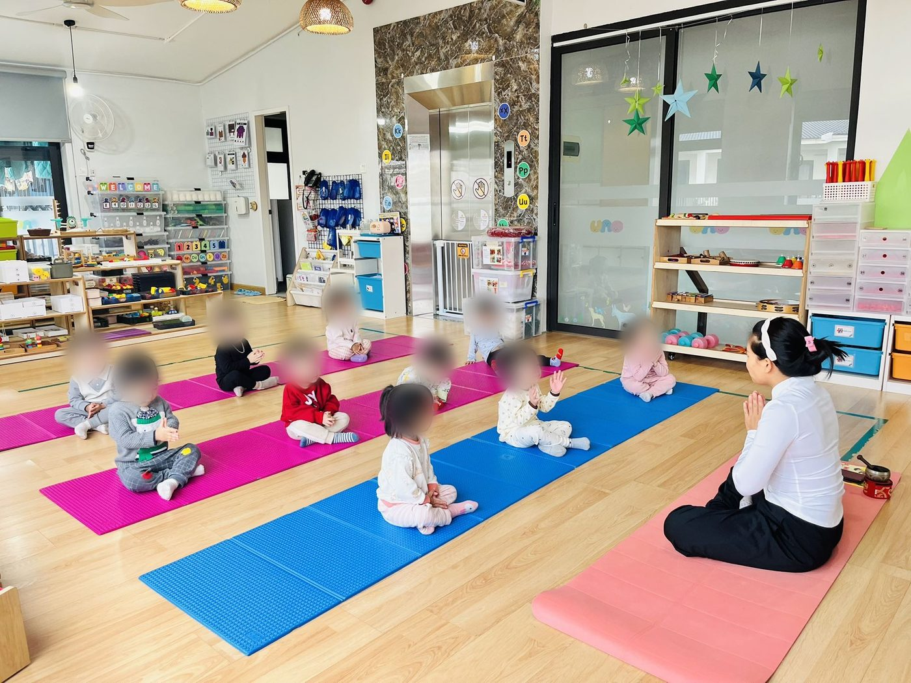
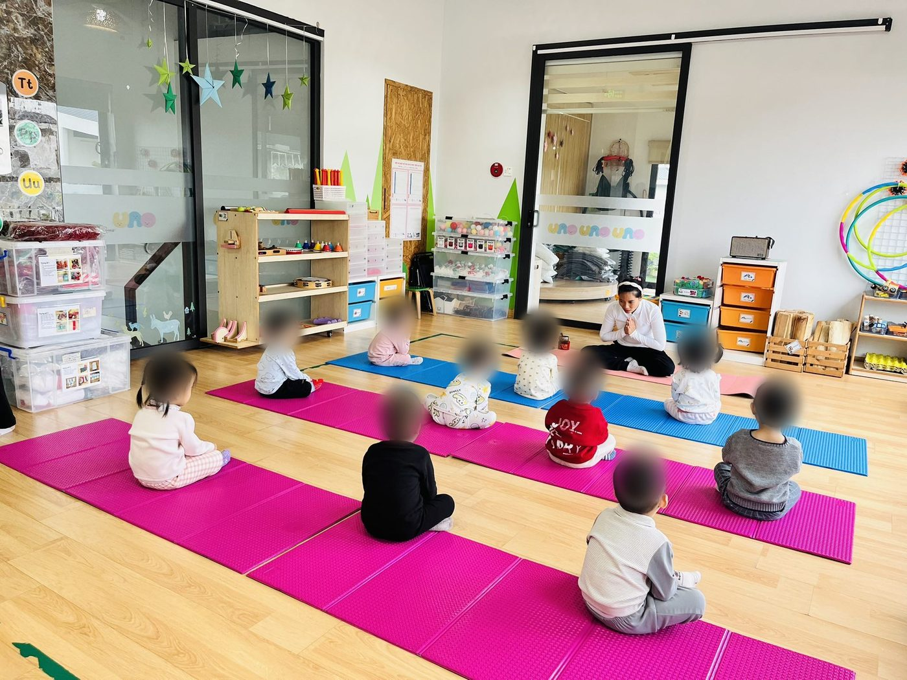
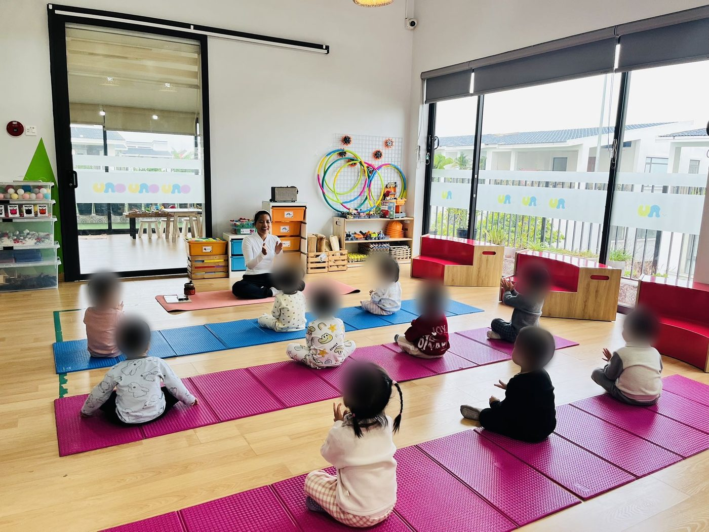
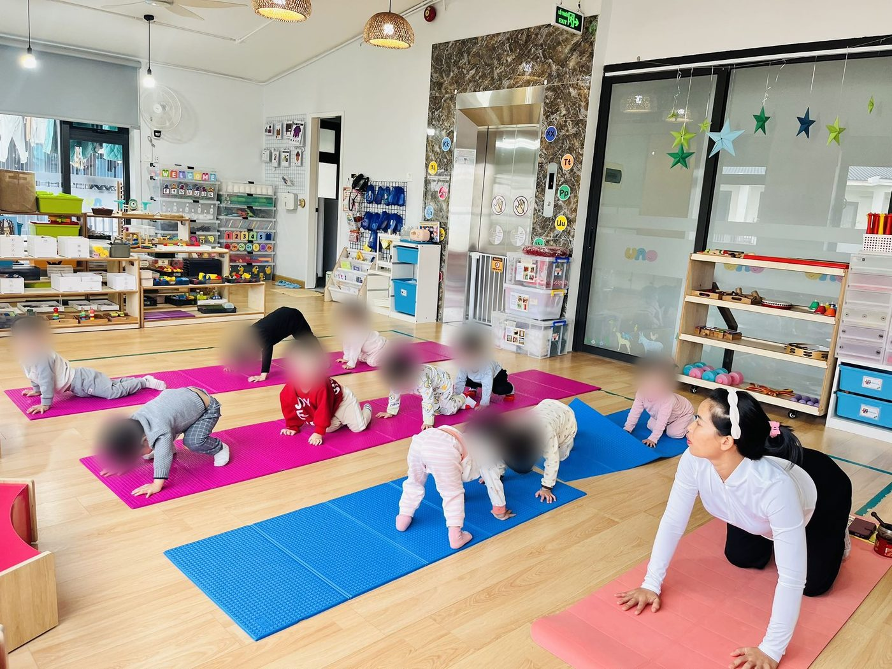
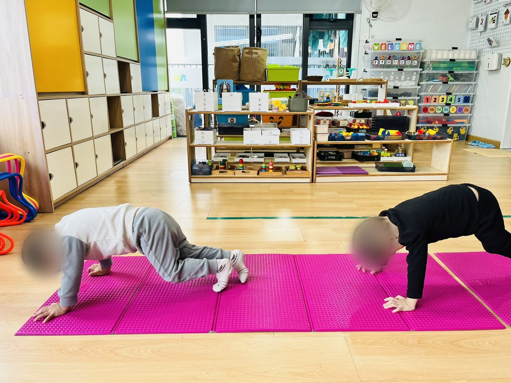
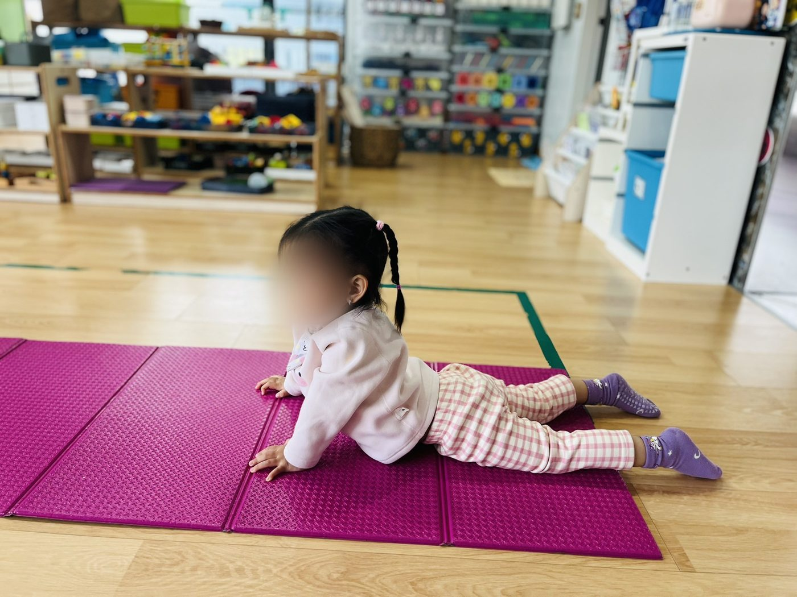
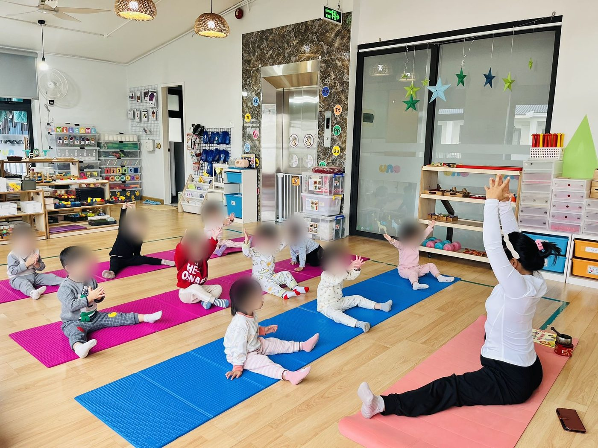

Bé dưới 3 tuổi
Yoga cho bé 16 tháng đến 2,5 tuổi: một buổi học nhẹ nhàng đi từ tiếng chuông đến các con vật

Khi lớp yoga bắt đầu bằng một tiếng chuông
Một tiếng chuông. Mười mấy cái đầu nhỏ quay lại.
Trên những tấm thảm hồng và xanh, các bé từ 16 tháng đến 2 tuổi rưỡi ngồi quanh cô. Cô chắp tay trước ngực, gõ nhẹ vào chiếc chuông xoay, rồi chờ. Tiếng chuông ngân dài. Vài bé chắp tay theo. Vài bé nhìn quanh. Một bé thè lưỡi cười. Một bé ngả lưng ra sau như đang nằm ở nhà.
Tất cả đều được phép như vậy.
Một lúc sau, các con bò bằng bốn chân, ưỡn người như chú rắn, chổng mông như chú chó con, rồi giơ cao hai tay chạm vào bầu trời. Đây không phải một lớp yoga người lớn thu nhỏ lại. Đây là một buổi chơi có nhịp: tiếng chuông mở ra, sự yên lặng khép lại, ở giữa là cơ thể bé được khám phá bằng chính sự tò mò của bé.
Bé dưới 3 tuổi học như thế nào
Muốn dạy được lứa tuổi này, cô nghĩ phải hiểu các con trước đã. Ở tuổi 16 tháng đến 2 tuổi rưỡi, bé vừa mới vững đôi chân. Theo bảng mốc phát triển của CDC Hoa Kỳ, khoảng 18 tháng phần lớn bé đã tự đi không cần vịn và hay bắt chước người lớn làm việc nhà; khoảng 2 tuổi bé chạy, đá bóng, chỉ được vài bộ phận cơ thể khi được hỏi. Mỗi bé một nhịp, sớm muộn vài tháng là chuyện thường.
Từ đó có ba điều Sophia luôn giữ trong đầu khi đứng lớp:
- Bé học bằng mắt, không bằng lời giảng. Một mẹ là giáo viên yoga viết trên Barefoot Books rằng khi chị giảng giải bằng lời cho con, việc ấy “không hiệu quả chút nào”. Cô làm mẫu, các con nhìn rồi làm theo.
- Chú ý rất ngắn. Cosmic Kids ghi nhận trẻ ở tuổi này khó tập trung lâu hơn khoảng 10 phút, nên một buổi học được chia thành nhiều chặng ngắn, mỗi chặng từ 1 đến 10 phút. Với các bé dưới 2 tuổi rưỡi, cô còn chia ngắn hơn nữa.
- Bé cần vận động thô. Bò, trườn, chống tay, ngồi dậy, vươn lên. Tổ chức Y tế Thế giới (WHO, 2019) khuyên trẻ 1 đến 2 tuổi vận động ít nhất 180 phút mỗi ngày, rải rác trong ngày, và không bị giữ một chỗ (xe đẩy, ghế ăn, địu) quá 1 giờ liền.
Nên với các con, yoga không nhằm đạt tư thế đúng. WonderBaby viết rất thật: bé có thể không theo hết buổi, khó ngồi yên, dễ bị phân tâm, “và điều đó không sao cả”. Làm đúng hay chưa đúng đều không quan trọng.
Một buổi học 20 phút, bốn chặng
Bảy bức ảnh hôm nay kể lại trọn một buổi. Các trang yoga trẻ em trên thế giới hay gợi ý một khung rất giống: mở đầu bằng một tín hiệu quen (chuông, bài hát), đi qua phần vận động, rồi hạ nhịp và nghỉ. Cô vẽ lại thành một vòng tròn cho dễ nhớ:
1. Tiếng chuông và chắp tay (mở đầu)
Cô ngồi đối diện, gõ chuông, chắp tay. Các con ngồi thành hàng trên thảm, ai bắt chước được thì bắt chước. Tiếng chuông là lời mời, không phải mệnh lệnh. Tuần nào cũng cùng một tiếng chuông ấy, các con dần biết: chuông kêu là giờ yoga đến rồi. Trên Barefoot Books cũng có gợi ý này: tạo một dấu hiệu quen cho giờ yoga, như tấm thảm hay một bài hát.


Thử gõ chuông ở đây và đếm xem tiếng chuông ngân bao lâu thì tắt:
🔔 Nghe chuông đến khi tắt hẳn
Ở lớp, cô gõ một tiếng, cả lớp cùng im lặng nghe. Tiếng chuông tắt, mình cùng hít một hơi thật sâu.
2. Vỗ tay và đôi bàn tay (khởi động)
Cả lớp vỗ tay theo nhịp, xoa hai lòng bàn tay cho ấm, áp lên má. Rất đơn giản. Nhưng đây là lúc bé nhận ra “mình có hai bàn tay”, và giữ được nhịp cùng các bạn. Cô hay hát chậm, lặp lại đúng một câu, vì các con thích sự lặp lại hơn mọi thứ mới.
3. Đi qua thế giới các con vật (vận động chính)
Đây là phần các con chờ nhất. Cô không gọi tên tư thế. Cô gọi tên con vật, kêu tiếng con vật, và làm trước. Bấm vào từng thẻ để xem cô dẫn thế nào:

Những con vật này không được chọn ngẫu nhiên. Theo WonderBaby, chó úp mặt có lẽ là tư thế yoga trẻ nhỏ nổi tiếng nhất, vì các bé “lúc nào cũng tự chổng mông như vậy mà chẳng cần ai bảo”. Cleveland Clinic xếp tư thế em bé, rắn hổ mang và chó úp mặt vào nhóm phù hợp từ tuổi mới biết đi trở lên.



4. Hạ nhịp và nằm nghỉ (kết thúc)
Cả lớp ngồi lại, chắp tay, thở cùng cô. Rồi nằm xuống thảm như rùa ngủ hay em bé ngủ. Có bé nhắm mắt thật. Có bé vẫn nhìn trần nhà, ngọ nguậy chân. Đó vẫn là một phần của sự yên lặng. Cô gõ chuông lần cuối, cả lớp vẫy tay chào nhau.
Đồng hồ buổi học 20 phút
Cô giáo và bố mẹ có thể dùng đồng hồ dưới đây để dẫn một buổi. Bấm Bắt đầu, mỗi khi sang chặng mới sẽ có một tiếng chuông nhẹ. Thời gian chỉ là gợi ý. Thấy các con mệt thì chuyển sớm, thấy các con đang vui thì cứ ở lại thêm.
⏱ Một buổi yoga cho bé dưới 3 tuổi
Hơi thở, cột sống, cân bằng ở tuổi lên hai
Sophia dạy theo hướng yoga cân bằng phục hồi: gốc là hơi thở, trọng tâm là cột sống, hướng đi là sự cân bằng. Với các bé lớn và người lớn, cô nói về điều này khá nhiều. Với các bé dưới 3 tuổi, cô không nói gì cả. Cô chỉ để nó nằm sẵn trong trò chơi.
- Hơi thở: bé chưa điều khiển hơi thở theo lời được. Cleveland Clinic cho rằng ngay từ tuổi mới biết đi, trẻ đã có thể bắt đầu làm quen với hơi thở. Ở lớp, việc đó diễn ra qua tiếng chuông, tiếng rắn xì xì, tiếng mèo meo meo, và lúc cả lớp cùng im lặng. Mỗi tiếng kêu kéo dài là một hơi thở ra dài.
- Cột sống: mèo cong lưng, bò võng lưng, chó con gập, rắn ưỡn, cây vươn dài. Trong vài phút, cột sống non của bé được chuyển động theo nhiều hướng một cách nhẹ nhàng, không ai kéo, không ai ấn.
- Cân bằng: bò bốn chân, chống tay, ngồi dậy, nằm xuống. Những chuyển động thô này giúp bé cảm nhận cơ thể mình trong không gian. Cân bằng ở tuổi này còn là cảm xúc: bé được tự do, nhưng biết có một nhịp quen để quay về.
Trong tám bậc của yoga, hai điều đầu tiên là giới và luật. Với lớp các bé, cô đọc chúng rất giản dị. Ahimsa, không làm tổn thương: không ép tư thế, không kéo tay chân, không chê. Santosha, biết đủ: bé làm được đến đâu, cô vui đến đó.
Để bé là người thầy
Nhìn lại bộ ảnh, mỗi bé đang làm một tư thế theo cách riêng. Bạn úp mặt sâu. Bạn ngồi thẳng nhìn cô. Bạn đã ngồi xuống nghỉ từ lâu. Không bạn nào bị sửa cho “đúng”. Barefoot Books viết thẳng: đừng bao giờ nói với bé rằng con đang làm sai, hãy giữ an toàn cho con, nhưng đừng chỉnh tư thế.
Vài điều cô luôn giữ:
- Cô làm mẫu, không chỉnh tay. Ngồi thấp, ngang tầm mắt các con. Bé học bằng mắt.
- Bé được đứng dậy, nhìn quanh, đổi tư thế. Một bé đứng lên đi một vòng rồi quay lại thảm là chuyện rất bình thường.
- Mỗi hoạt động ngắn, có dấu hiệu rõ. Chuông là lời mời, không phải mệnh lệnh.
- Lặp lại đều mỗi tuần. Cosmic Kids nhận xét các bé thấy an toàn khi đã quen trình tự buổi học, và với lứa tuổi này, điều then chốt là sự đều đặn.
Khi cô để bé “dẫn” một phần buổi học, bé thường cho cô thấy điều bé đang cảm nhận: thích con vật nào, muốn dừng ở đâu, cần nghỉ lúc nào. Có hôm cả lớp chỉ muốn làm chó con. Vậy thì hôm ấy là ngày của chó con.
Chuẩn bị trước giờ học
Danh sách nhỏ cho cô giáo và bố mẹ. Đánh dấu điều đã chuẩn bị, trang sẽ nhớ trên máy của bạn.
🧺 Trước giờ yoga của các bé
An toàn với cơ thể rất nhỏ
Khớp của bé dưới 3 tuổi mềm, cơ còn yếu, đầu to so với thân. Nên cô cẩn thận hơn nhiều so với lớp bé lớn:
- Không kéo, ấn, nâng bé vào tư thế. Không đặt trọng lượng người lớn lên lưng bé.
- Không giữ lâu. Mỗi tư thế vài hơi thở, hoặc vài tiếng kêu của con vật.
- Không cho bé chúc đầu xuống lâu, không làm tư thế trồng chuối hay đứng trên vai.
- Bé khóc, nhăn mặt, ôm chỗ nào đó: dừng lại, ôm bé, cho bé nghỉ. Cleveland Clinic nhắc rằng yoga không bao giờ nên gây đau.
- Bé có bệnh lý tim, hô hấp, khớp, hoặc vừa phẫu thuật: hỏi bác sĩ trước khi cho tập.
Ngoài tấm thảm: nhịp sống của bé
Hai mươi phút trên thảm chỉ là một phần nhỏ. Điều nuôi bé lớn lên khỏe và bình an nằm ở nhịp sống mỗi ngày của cả nhà. WHO (2019) khuyên trẻ 1 đến 2 tuổi:
- Vận động ít nhất 180 phút mỗi ngày, đủ kiểu, rải rác trong ngày. Càng nhiều càng tốt.
- Ngủ 11 đến 14 tiếng có chất lượng, kể cả giấc trưa, giờ ngủ giờ dậy đều đặn.
- Màn hình: không khuyến khích cho bé 1 tuổi; bé 2 tuổi không quá 1 giờ mỗi ngày, càng ít càng tốt. Xem thêm bài bé mê màn hình.
- Khi ngồi yên, đọc sách, kể chuyện cùng bé thay cho màn hình.
Sophia thêm vài điều nhỏ từ lớp học: cho bé đi chân đất trên cỏ, tắm nắng sớm, ăn bữa ăn thật, được ôm nhiều. Và bố mẹ có thể mang tiếng chuông về nhà: một tiếng chuông trước giờ ngủ, cả nhà cùng im lặng nghe cho đến khi tắt. Đơn giản vậy thôi.
Khi nào nên hỏi ý kiến bác sĩ
Mỗi bé lớn theo nhịp riêng, và yoga không phải công cụ để “chẩn đoán” bé. Nhưng trong lớp, cô giáo nhìn thấy các con khá rõ. Bố mẹ nên đưa bé đi khám bác sĩ nhi, hoặc nói với bác sĩ ở lần khám định kỳ, nếu thấy:
- Khoảng 18 tháng mà bé chưa tự đi, chưa chỉ tay vào thứ bé muốn, ít hoặc không bắt chước người lớn.
- Khoảng 2 tuổi mà bé chưa chạy được, chưa nói được vài từ có nghĩa, không chỉ được bộ phận cơ thể nào khi hỏi.
- Bé mất đi kỹ năng đã từng có, ở bất kỳ tuổi nào.
- Bé luôn dùng một bên tay hoặc chân rõ rệt, hay vấp ngã nhiều hơn hẳn các bạn, người quá mềm hoặc quá cứng.
- Bé gần như không nhìn mắt, không phản ứng khi được gọi tên.
Những dấu hiệu này dựa theo chương trình “Learn the Signs. Act Early.” của CDC. Phát hiện sớm giúp bé được hỗ trợ sớm. Yoga đi cùng, không thay thế sự chăm sóc của bác sĩ.
Điều đọng lại sau buổi học
Nhìn lại những bức ảnh hôm nay, điều cô nhớ không phải tư thế nào chuẩn. Mà là ánh mắt của các con: tò mò, tin tưởng, và được là chính mình.
Yoga cho bé dưới ba tuổi bắt đầu như vậy. Một tiếng chuông. Một vòng ngồi. Và thời gian để cơ thể nhỏ lớn lên theo nhịp của riêng nó.
Hít vào, nghe chuông. Thở ra, mỉm cười.
🌿 Muốn dẫn được những lớp yoga như vậy?
Dạy các bé dưới 3 tuổi cần nhiều thứ hơn một danh sách tư thế: cách ngồi, cách nhìn, cách dùng chuông, cách để bé tự do mà lớp vẫn có nhịp. Sophia hướng dẫn kỹ trong khóa Đào tạo Huấn luyện viên Yoga trẻ em. Trường mầm non muốn mời cô về lớp, hay bố mẹ muốn hỏi lịch, cứ nhắn cô nhé.
Đọc thêm: Yoga trẻ em không phải yoga người lớn thu nhỏ, Trò chơi gõ chuông và Yoga với gấu bông.
📚 Tài liệu tham khảo
- Barefoot Books. Keeping it real with toddler yoga: 10 tips from a yoga-expert mom, 2021.
- WonderBaby. 8 Fun Yoga Poses for Toddlers, 2023.
- Cleveland Clinic. Yoga for Kids: Benefits and 17 Poses, 2024.
- Cosmic Kids. Making Yoga Fun for Toddlers and Preschoolers, 2016 (cập nhật 2023).
- Yoga Chicago. Teaching Yoga to Toddlers, 2014.
- World Health Organization. Guidelines on physical activity, sedentary behaviour and sleep for children under 5 years of age. Geneva: WHO, 2019.
- CDC. Learn the Signs. Act Early: Milestones by age (18 tháng, 2 tuổi).